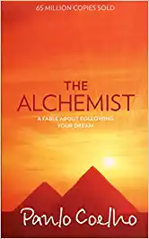
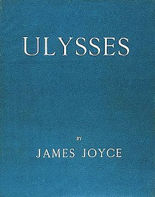
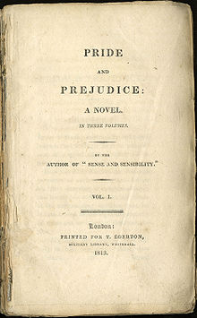

Books And Authors

Wings of Fire is a series of children's fantasy novels written by author Tui T. Sutherland and published by
Scholastic Corporation.[1] Over 14 million copies of the books have been sold and it has been on the New York
Times bestseller list for more than 122 weeks.[2][3]
The series currently consists of three arcs, which focus on young dragons fulfilling prophecies in a fantasy
world. Each arc consists of five books, and each book centers on its own protagonist whose story is told through
a third person limited perspective. At present, a total of fourteen books in the main series have been released
from 2012 to 2021.

The Alchemist (Portuguese: O Alquimista) is a novel by Brazilian author Paulo Coelho that was first published in
1988. Originally written in Portuguese, it became a widely translated international bestseller.[1][2] An
allegorical novel, The Alchemist follows a young Andalusian shepherd in his journey to the pyramids of Egypt,
after having a recurring dream of finding a treasure there.
After Santiago sets out, he meets an old king Melchizedek, or the king of Salem, who tells him to sell his sheep
so as to travel to Egypt and accomplish his 'Personal Legend'. Early on his arrival in Africa, a man who claims
to be able to take Santiago to the pyramids instead robs him of the money he had made from his flock.

Ulysses is a modernist novel by Irish writer James Joyce. It was first serialized in parts in the American
journal The Little Review from March 1918 to December 1920 and then published in its entirety in Paris by Sylvia
Beach on 2 February 1922, Joyce's 40th birthday. It is considered one of the most important works of modernist
literature[1] and has been called "a demonstration and summation of the entire movement."[2] According to Declan
Kiberd, "Before Joyce, no writer of fiction had so foregrounded the process of thinking".[3]

The Great Gatsby is a 1925 novel by American writer F. Scott Fitzgerald. Set in the Jazz Age on Long Island,
near New York City, the novel depicts first-person narrator Nick Carraway's interactions with mysterious
millionaire Jay Gatsby and Gatsby's obsession to reunite with his former lover, Daisy Buchanan.
The novel was inspired by a youthful romance Fitzgerald had with socialite Ginevra King, and the riotous parties
he attended on Long Island's North Shore in 1922. Following a move to the French Riviera, Fitzgerald completed a
rough draft of the novel in 1924. He submitted it to editor Maxwell Perkins, who persuaded Fitzgerald to revise
the work over the following winter.
The Great Gatsby is a 1925 novel by American writer F. Scott Fitzgerald. Set in the Jazz Age on Long Island,
near New York City, the novel depicts first-person narrator Nick Carraway's interactions with mysterious
millionaire Jay Gatsby and Gatsby's obsession to reunite with his former lover, Daisy Buchanan.
The novel was inspired by a youthful romance Fitzgerald had with socialite Ginevra King, and the riotous parties
he attended on Long Island's North Shore in 1922. Following a move to the French Riviera, Fitzgerald completed a
rough draft of the novel in 1924. He submitted it to editor Maxwell Perkins, who persuaded Fitzgerald to revise
the work over the following winter.

Heart of Darkness (1899) is a novella by Polish-English novelist Joseph Conrad. It tells the story of Charles
Marlow, a sailor who takes on an assignment from a Belgian trading company as a ferry-boat captain in the
African interior. The novel is widely regarded as a critique of European colonial rule in Africa, whilst also
examining the themes of power dynamics and morality. Although Conrad does not name the river where the narrative
takes place, at the time of writing the Congo Free State, the location of the large and economically important

The Old Man and the Sea is one of Hemingway's most enduring works. Told in language of great simplicity and
power, it is the story of an old Cuban fisherman, down on his luck, and his supreme ordeal — a relentless,
agonizing battle with a giant marlin far out in the Gulf Stream. Here Hemingway recasts, in strikingly
contemporary style, the classic theme of courage in the face of defeat, of personal triumph won from loss.
Written in 1952, this hugely successful novella confirmed his power and presence in the literary world and
played a large part in his winning the 1954 Nobel Prize for Literature.

Animal Farm is a satirical allegorical novella by George Orwell, first published in England on 17 August
1945.[1][2] The book tells the story of a group of farm animals who rebel against their human farmer, hoping to
create a society where the animals can be equal, free, and happy. Ultimately, the rebellion is betrayed, and the
farm ends up in a state as bad as it was before, under the dictatorship of a pig named Napoleon.